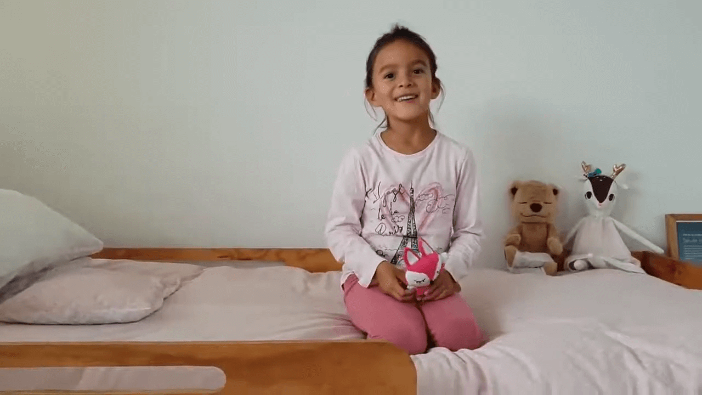

Ejercicio de Respiración en casa 🍃🏠
☆
Hoy día, queremos compartir con ustedes un simple ejercicio de Respiración para todas las edades 👦👧👨👩🧓👵.
☆
Este simple ejercicio te puede ayudar en momentos de estrés, miedo, angustia o simplemente para tomar un momento de calma durante el día 🙏.
☆
Para los peques es una divertida forma de tomar conciencia sobre la respiración. ☆
Es una linda actividad para realizar en familia. Por ejemplo, antes de ir a dormir 😴
☆
Si quieren compartirlo con sus amig@s pueden hacerlo! Estamos seguras que muchos niños y niñas estarán felices de poder hacerlo en casa.
☆
Un abrazo, Luz 😊🙏🧘♀️
(Y mamá que ahora pasó a ser simplemente camarógrafa 😂🎬) #yomequedoencasa
